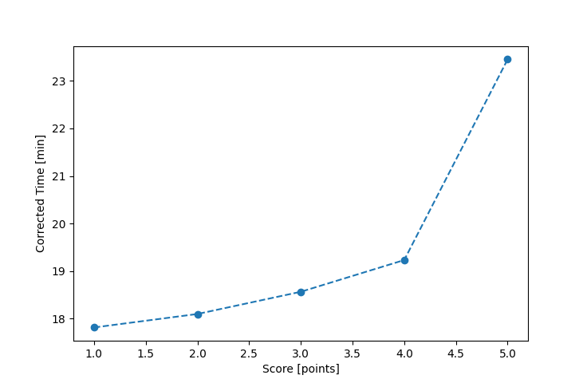

| Wind: | 2-3 (BFT) |
|---|---|
| RC: | Barry_O, Nick_H |
| Date: | June 10, 2018 |
| Notes: | M course 2 laps starboard rounding |
| Rank / Score | Name | Boat | Input Time [mm:ss] | Input Offset [mm:ss] | Race Time [mm:ss] | Race Time [s] | Handicap | Corrected Time [s] | Corrected Time [mm:ss] |
|---|---|---|---|---|---|---|---|---|---|
| 1.0 | Rod_H | LASEM | 17:20 | 00:00 | 17:20 | 1040 | 0.97300 | 1069 | 17:49 |
| 2.0 | Chris_E | SF | 18:10 | 00:00 | 18:10 | 1090 | 1.00400 | 1086 | 18:06 |
| 3.0 | Art_M | SWSX | 17:48 | 00:00 | 17:48 | 1068 | 0.95900 | 1114 | 18:34 |
| 4.0 | Ron_F | F5 | 18:35 | 00:00 | 18:35 | 1115 | 0.96600 | 1154 | 19:14 |
| 5.0 | Pat_B | WF | 21:30 | 00:00 | 21:30 | 1290 | 0.91700 | 1407 | 23:27 |

Application Notes:
All race results are unofficial
View source code at https://github.com/cessnao3/portsmouthracecalc/